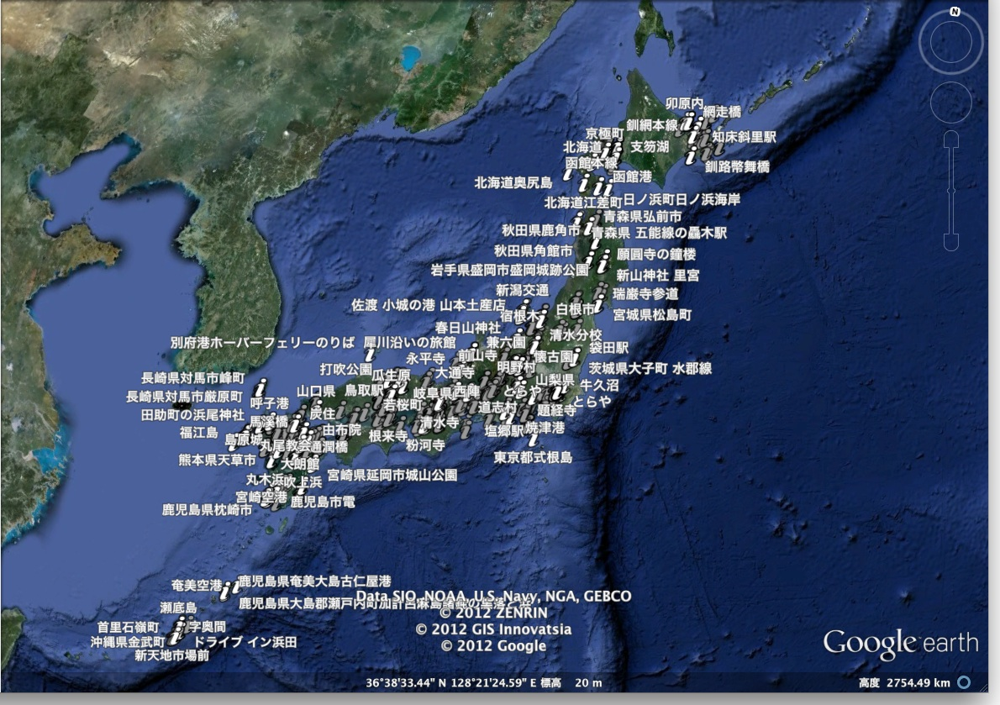

デジタル技術で楽しむ「男はつらいよ」非公式サイト
コンテンツ
- Google earthで「男はつらいよ」第一作オープニング(注: 音が出ます)
-
Google earthとParanomioの写真で、第一作オープニングで紹介される寅さんの故郷を再現してみました。地理的位置関係がわかるとオープニングがまた生き生きと感じられます。(残念ながらGoogle Earthプラグイン、かなり不安定です。)
- 「男はつらいよ」ロケ地情報(KMLファイル(パソコン版Google earth用ファイル)
- Google earth上に「男はつらいよ」のロケ地をプロットしました。寅さんの旅の軌跡を追ってみませんか？
データに関しては、「男はつらいよ」公式サイト 虎の巻全作品データベース、地ムービー、「男はつらいよ」覚え書きノート、ちくま文庫シナリオ・コレクション「男はつらいよ登場篇」を利用させていただきました。
現在、第四作まで詳細チェックしております。第五作以降も順次更新して行きます。
